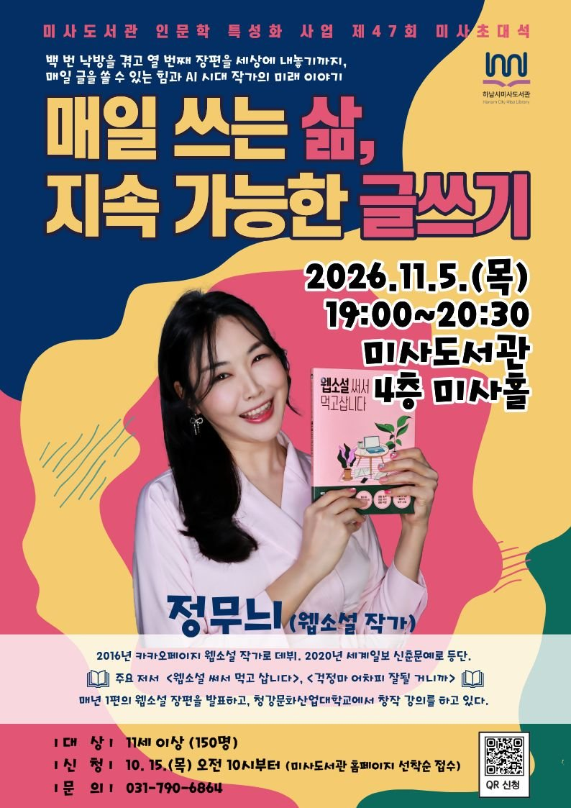
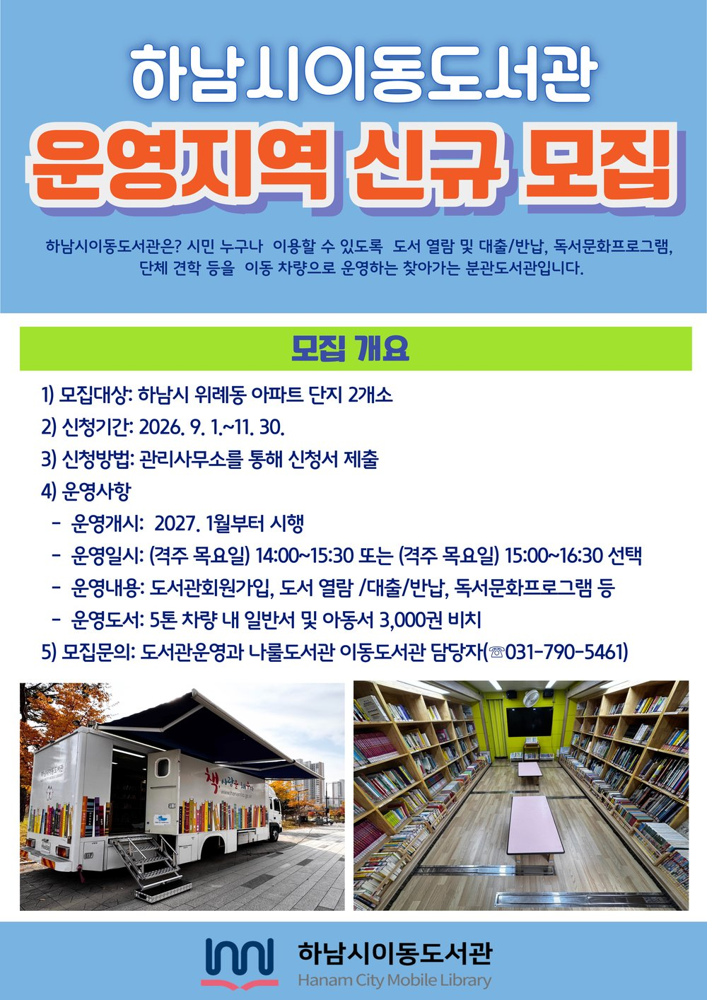

61호 | 2026년 10월 20일 발행
📌 이번 호 주요 목차
 우리동네 국회의원 이광재
우리동네 국회의원 이광재
📝 현장일지
이광재의원 "하남에서 들은 이야기, 결과로 돌려드리겠습니다" 10월 셋째 주 주간 이광재
• 안민석 경기도교육감, 하남교육지원청 신설 약속 — 개청 2028년 3월→내년 9월로 앞당겨
• 창우초·신평중 복도 창문 교체 특별교부금 8억 3,600만 원 확보
• 김용민·김용만 의원과 경기도에 9호선 연장 조속 추진 건의문 전달
• 김용석 대광위원장과 위례 버스정류장 점검, 대광위 '대광청' 격상 제안
• 학교 과밀은 학부모 TF로, 위례신사선은 올해 국가예산 반영 추진
• 부동산협의회 간담회 — 실거주 토지거래허가 절차·처리기간 손질 검토
• 창우초·신평중 복도 창문 교체 특별교부금 8억 3,600만 원 확보
• 김용민·김용만 의원과 경기도에 9호선 연장 조속 추진 건의문 전달
• 김용석 대광위원장과 위례 버스정류장 점검, 대광위 '대광청' 격상 제안
• 학교 과밀은 학부모 TF로, 위례신사선은 올해 국가예산 반영 추진
• 부동산협의회 간담회 — 실거주 토지거래허가 절차·처리기간 손질 검토
📌 출처: 이광재 공식 네이버 블로그
📰 언론보도
[헤럴드경제] 이광재의원 "하남교육지원청 조기 신설 환영… 국회에서 역할 이어갈 것"
이광재 의원이 안민석 경기도교육감의 하남교육지원청 신설 약속에 환영의 뜻을 밝혔습니다. 교육지원청은 내년 9월 하남종합복지타운 6층 임시청사에서 먼저 문을 열고, 본청은 원도심 신장동에 마련됩니다. 이 의원은 위례·감일지구 10개 학교 학생 수가 3년 새 16.4% 늘었다며 "신도시는 과밀을, 원도심은 소멸을 걱정한다"고 설명했습니다. 남은 과제인 본청 예산과 인력은 교육부와 협의해 국회에서 풀겠다고 밝혔습니다.
📌 출처: 헤럴드경제 (양대근 기자)
📰 하남 지역 주요 뉴스
🏛️ 의회/행정
최승태 하남시의원 "역사박물관장 채용, 블라인드라더니 홍보대사가 면접위원" 지적
하남시의회 최승태 의회운영위원장이 16일 문화정책과 행정사무감사에서 하남역사박물관장 채용 과정의 면접위원 구성을 문제 삼았습니다. 하남문화재단은 7월 공모를 거쳐 금광연 전 시의회 의장을 관장으로 임명했는데, 심사위원 8명 중 하남시 홍보대사인 방송인 A씨가 포함됐습니다. 최 의원은 블라인드 채용이었던 만큼 이해충돌 검증과 제척 절차가 있었는지 따져 묻고, 하남도시공사 사장 재임용 논란과 함께 산하 공공기관 인사 검증 체계 전반을 시 차원에서 점검하라고 촉구했습니다.
📌 출처: 서울신문 서울Pn
🎪 행사/나눔
미사경정공원서 '패밀리 킥앤런'… 가족 1,100여 명 달리고 장애 어린이 재활 1,500만 원 기부
마이크로킥보드 운영사 아른이 17일 미사경정공원에서 '제14회 마이크로 패밀리 킥앤런'을 열고 푸르메재단에 1,500여만 원을 기부했습니다. 아이가 킥보드를 타고 부모와 함께 코스를 완주하는 가족 행사로, 순위나 기록을 겨루지 않습니다. 10대 1 경쟁률 속에 추첨으로 뽑힌 1,100여 명이 참가했고, 사격 체험·링 던지기·킥보드 꾸미기 등 체험 프로그램도 열렸습니다. 기부금은 넥슨어린이재활병원에서 장애 어린이 재활치료에 쓰이며, 참가자들은 참가비가 좋은 곳에 쓰여 더 뜻깊다고 전했습니다.
📌 출처: 동아일보 (황소영 기자)
🎓 교육/진로
LX하남지사, 하남시 청소년진로박람회서 '지적측량 보물찾기' 체험 운영
한국국토정보공사(LX) 하남지사가 17일 하남시에서 열린 '2026년 청소년진로박람회'에 참가해 지적측량 체험 부스를 운영했습니다. '지적측량탐험대, 숨은 보물 찾기'를 주제로 청소년들이 토탈스테이션과 폴대 등 전문 측량장비를 직접 다루며 숨겨진 보물을 찾는 방식입니다. 토지 경계 확인처럼 생활과 밀접한 측량 업무를 소개하고 관련 직업을 탐색하도록 돕기 위해 마련됐습니다. 전선미 지사장은 앞으로도 다양한 체험·홍보 활동으로 지적측량을 친숙하게 알리겠다고 말했습니다.
📌 출처: 국토일보 (김현재 기자)
💬 하남 맘카페 HOT 이슈
이번 주 하남 지역 맘카페(미사맘스클럽, 정다운 감일맘, 아이품애, 하남미사교산4050 등)에서 많이 오르내린 HOT 이슈 TOP 3입니다.
1️⃣ [교통] "하남이라도 먼저 착공을"… 9호선 연장 유찰 장기화에 조기착공 목소리
현황: 강동하남남양주선(9호선 연장) 공사가 공사비 상승과 잇단 입찰 유찰로 늦어지면서 지역 카페마다 진행 상황을 묻고 공유하는 글이 이어졌습니다. 미사강변 연합카페에는 8개 역사 위치와 기본계획 수요예측 자료가 다시 올라왔고, 고덕지구 이웃사촌·부동산 카페에는 강일동 리버파크 7단지 앞에서 지반조사가 시작됐다며 하남 구간 선착공을 기대하는 글이 공유됐습니다. 하남 주민들이 낸 조기착공 도민청원이 1만 명을 넘겨 경기도 답변을 기다리고 있다는 소식, 이정연 하남시의원이 경기도청 앞에서 2공구 수의계약을 요구하며 1인 시위를 했다는 소식, 하남·남양주 지역 국회의원들이 경기도에 수의계약 등 조속 추진을 건의했다는 기사도 잇따라 퍼졌습니다. 교산우리동네 카페에는 '하남검단산역 7시 40분대 버스는 한 대 보내고 타라', '자전거 출근을 접고 버스로 갈아탔더니 서서 가느라 멀미가 난다'는 출근길 고충 글도 올라왔습니다.
💡 주민 포인트: 강동하남남양주선은 1공구만 서울시, 2~6공구는 경기도가 맡고 있어 유찰 공구의 계약 방식은 경기도 결정이 관건입니다. 도민청원 답변은 경기도 누리집 '경기도의 소리(도민청원)'에서 확인할 수 있습니다.
💬 주민 반응: "미사 출퇴근 지옥을 언제까지 버텨야 하나"는 하소연 속에, 이번만큼은 착공 일정이 확정되길 바란다는 기대가 큽니다.
📌 출처: 네이버 카페 (미사강변 연합카페, 고덕지구 이웃사촌모임, 교산우리동네, 부동산 스터디, 왕숙맘)
2️⃣ [교육] "미사고·하남고·청아고 어디로?"… 중간고사 끝나자 예비 고1 고교 선택 고민
현황: 2학기 중간고사가 마무리되고 고등학교 입학설명회 시즌이 다가오면서 중3 학부모들의 고교 선택 고민 글이 크게 늘었습니다. 미사강변도시 미사맘스클럽에는 '미술 입시를 준비하는데 미사고·청아고·풍산고 중 어디가 나을까', '학교 주최 입학설명회에 중2 학부모가 가도 되나' 같은 질문이 올라왔고, 고1 자녀 전학을 알아보던 학부모는 '교육청에 물어보니 미사고는 자리가 없고 하남고는 여유가 있다더라'는 경험을 공유했습니다. 정다운 감일맘에는 10월 27일 오후 5시 감일고 설명회에 따로 신청해야 하느냐는 문의가 이어졌고, 하남미사교산4050 카페에는 교육감 타운홀미팅에서 청아고 이야기도 짧게 나왔다는 후기와 미사고 행사 계획이 공유됐습니다. 위례에서 공부하기 카페에도 위례고·위례한빛고 등 예비 고1 설명회 일정이 올라왔습니다.
💡 주민 포인트: 학교별 입학설명회는 일정과 사전 신청 여부가 학교마다 다르니 해당 고등학교 누리집 공지사항과 가정통신문을 먼저 확인하세요. 고교 전·편입학은 학교별 결원이 있어야 가능하므로 광주하남교육지원청에 결원 현황을 문의하는 것이 정확합니다.
💬 주민 반응: "내신이냐 면학 분위기냐"를 두고 의견이 갈리는 가운데, 설명회 후기를 서로 나누자는 글이 많습니다.
📌 출처: 네이버 카페 (미사강변도시 미사맘스클럽, 정다운 감일맘, 하남미사교산4050, 위례에서 공부하기)
3️⃣ [축제] "첫날은 좋았는데…" 하나반 치유 페스티벌, 음향 아쉬움에 둘째 날은 강풍 연기
현황: 17~18일 나무고아원과 미사한강공원 4호 일원에서 열린 '2026 하나반 치유 페스티벌'이 지난 주말 카페의 화제였습니다. 행사 전 정다운 감일맘 등에는 어반자카파·민경훈·나린 출연 소식이 공유됐고, 첫날 아이품애 카페에는 '나무고아원 요가 프로그램에 왔는데 조용하고 산책 공간이 많아 마음이 여유로워진다'는 후기가 올라왔습니다. 반면 미사맘스클럽에는 '기대하고 왔는데 가수 목소리가 웅얼거려 하나도 안 들린다', '베이스가 너무 커서 아쉽다'며 다음 공연 때는 음향 리허설을 신경 써 달라는 글이 연달아 올라왔습니다. 18일에는 강풍과 비로 둘째 날 행사가 연기됐다는 안내가 '우리동네소식'으로 공유되면서 새 일정을 묻는 댓글이 이어졌습니다.
💡 주민 포인트: 연기된 일정은 하남시와 하남문화재단 누리집·SNS로 안내될 예정입니다. 주말 가족 나들이를 계획 중이라면 공지를 미리 확인하세요.
💬 주민 반응: 나무고아원 프로그램은 "또 오고 싶다"는 호평이, 공연은 "음향만 좋았어도"라는 아쉬움이 함께 나왔습니다.
📌 출처: 네이버 카페 (미사강변도시 미사맘스클럽, 아이품애, 정다운 감일맘, 교산신도시 부동산정보)
🎭 ALL IN 하남라이프
2026년 10월 20일 기준 한눈에 보는 하남시 최신 문화·행사·교육 안내 가이드
🧘 ~10.29(목) 접수 | 덕풍스포츠문화센터 · 60세 이상 20명 추첨
[건강] 시니어 헬스센터 「바른자세 스트레칭 운동교실 5기」 참가자 모집 (하남시보건소)
"굽은 등 펴고 코어 힘 키우는 6주"
하남시보건소 시니어 헬스센터가 소도구를 활용한 유연성 향상·코어근육 강화·전신 혈액순환 운동교실 5기를 운영합니다. 매주 수·금 1시간씩 총 12회 진행합니다.
🗓 일정: 2026.11.4(수) ~ 12.11(금) 매주 수·금 14:30~15:30 (총 12회)
📍 장소: 시니어 헬스센터 (역말로 71, 덕풍스포츠문화센터 2층 교육실)
👥 대상: 60세 이상 하남시민 20명
✅ 신청: 10.29(목) 18:00까지 센터 방문 또는 전화 접수 후 추첨 (점심시간 12~13시 제외)
☎️ 문의: 031-5182-1640
하남시보건소 시니어 헬스센터가 소도구를 활용한 유연성 향상·코어근육 강화·전신 혈액순환 운동교실 5기를 운영합니다. 매주 수·금 1시간씩 총 12회 진행합니다.
🗓 일정: 2026.11.4(수) ~ 12.11(금) 매주 수·금 14:30~15:30 (총 12회)
📍 장소: 시니어 헬스센터 (역말로 71, 덕풍스포츠문화센터 2층 교육실)
👥 대상: 60세 이상 하남시민 20명
✅ 신청: 10.29(목) 18:00까지 센터 방문 또는 전화 접수 후 추첨 (점심시간 12~13시 제외)
☎️ 문의: 031-5182-1640
📌 출처: 하남시보건소 (건강증진과)
📚 11.5(목) 19:00 | 미사도서관 4층 미사홀 · 11세 이상 150명
[작가 강연] 제47회 미사초대석 「매일 쓰는 삶, 지속 가능한 글쓰기」 정무늬 작가 (미사도서관)
"백 번 낙방 끝에 열 번째 장편까지, 매일 쓰는 힘"
2016년 카카오페이지 웹소설로 데뷔해 2020년 세계일보 신춘문예로 등단한 정무늬 작가가 매일 글을 쓰는 힘과 AI 시대 작가의 미래를 이야기합니다. 저서 <웹소설 써서 먹고 삽니다>, <걱정마 어차피 잘될 거니까>.
🗓 일정: 2026.11.5(목) 19:00~20:30
📍 장소: 미사도서관 4층 미사홀 (주차 1시간 무료)
👥 대상: 11세 이상 150명
✅ 신청: 미사도서관 누리집 선착순 온라인 접수 (~11.2까지)
☎️ 문의: 031-790-6864
2016년 카카오페이지 웹소설로 데뷔해 2020년 세계일보 신춘문예로 등단한 정무늬 작가가 매일 글을 쓰는 힘과 AI 시대 작가의 미래를 이야기합니다. 저서 <웹소설 써서 먹고 삽니다>, <걱정마 어차피 잘될 거니까>.
🗓 일정: 2026.11.5(목) 19:00~20:30
📍 장소: 미사도서관 4층 미사홀 (주차 1시간 무료)
👥 대상: 11세 이상 150명
✅ 신청: 미사도서관 누리집 선착순 온라인 접수 (~11.2까지)
☎️ 문의: 031-790-6864

📌 출처: 하남시립 미사도서관
🏛️ 공공기관 소식지
2026년 10월 20일 기준 하남시 공공기관 주요 공고·신청 안내입니다.
🏥 하남시보건소 | ~10.23(금) · 온라인 주민설문
제9기(2027~2030) 하남시 보건소 지역보건의료계획 주민설문 — 시민 의견 수렴
"앞으로 4년, 우리 동네 보건소에 바라는 점은?"
하남시보건소가 2027~2030년 지역보건의료계획 수립에 앞서 주민 설문을 진행합니다. 보건소 이용 현황, 필요한 보건의료서비스, 건강관리 수준과 요구사항을 조사해 지역 맞춤형 보건사업에 반영합니다.
📝 기간: 2026.10.6(화) ~ 10.23(금)
👥 대상: 하남시 거주 주민 누구나
✅ 방법: 온라인 설문 (네이버폼 참여 링크)
☎️ 문의: 031-790-5072 (보건정책과)
하남시보건소가 2027~2030년 지역보건의료계획 수립에 앞서 주민 설문을 진행합니다. 보건소 이용 현황, 필요한 보건의료서비스, 건강관리 수준과 요구사항을 조사해 지역 맞춤형 보건사업에 반영합니다.
📝 기간: 2026.10.6(화) ~ 10.23(금)
👥 대상: 하남시 거주 주민 누구나
✅ 방법: 온라인 설문 (네이버폼 참여 링크)
☎️ 문의: 031-790-5072 (보건정책과)
📌 출처: 하남시보건소 (보건정책과)
📚 하남시립도서관 | ~11.30(월) · 위례동 아파트 2개 단지
하남시 이동도서관 운영지역 신규 모집 — 위례동 아파트 단지 신청 접수
"책 3,000권 실은 도서관 버스가 우리 단지로"
5톤 차량에 일반서·아동서 3,000권을 싣고 찾아가는 하남시 이동도서관이 내년부터 들를 위례동 아파트 단지를 모집합니다. 회원가입, 도서 열람·대출·반납, 독서문화프로그램을 단지 안에서 이용할 수 있습니다.
📝 접수: 2026.9.1 ~ 11.30
👥 대상: 하남시 위례동 아파트 단지 2개소
🗓 운영: 2027년 1월부터 격주 목요일 14:00~15:30 또는 15:00~16:30 중 선택
✅ 방법: 아파트 관리사무소를 통해 신청서 제출
☎️ 문의: 031-790-5461 (나룰도서관 이동도서관 담당)
5톤 차량에 일반서·아동서 3,000권을 싣고 찾아가는 하남시 이동도서관이 내년부터 들를 위례동 아파트 단지를 모집합니다. 회원가입, 도서 열람·대출·반납, 독서문화프로그램을 단지 안에서 이용할 수 있습니다.
📝 접수: 2026.9.1 ~ 11.30
👥 대상: 하남시 위례동 아파트 단지 2개소
🗓 운영: 2027년 1월부터 격주 목요일 14:00~15:30 또는 15:00~16:30 중 선택
✅ 방법: 아파트 관리사무소를 통해 신청서 제출
☎️ 문의: 031-790-5461 (나룰도서관 이동도서관 담당)

📌 출처: 하남시립도서관 (도서관운영과)
© 2026 우리동네 진짜일꾼 이광재